Không gian 01
Nông sản
Hương sắc quê hương
Nơi tái hiện hình ảnh thân thuộc của làng quê Việt Nam qua những sản vật bình dị như lạc, rau củ, hoa quả, hình ảnh chú gà, chiếc giỏ cùng những vật dụng lao động quen thuộc.
Không gian 01
Hương sắc quê hương
Nơi tái hiện hình ảnh thân thuộc của làng quê Việt Nam qua những sản vật bình dị như lạc, rau củ, hoa quả, hình ảnh chú gà, chiếc giỏ cùng những vật dụng lao động quen thuộc.
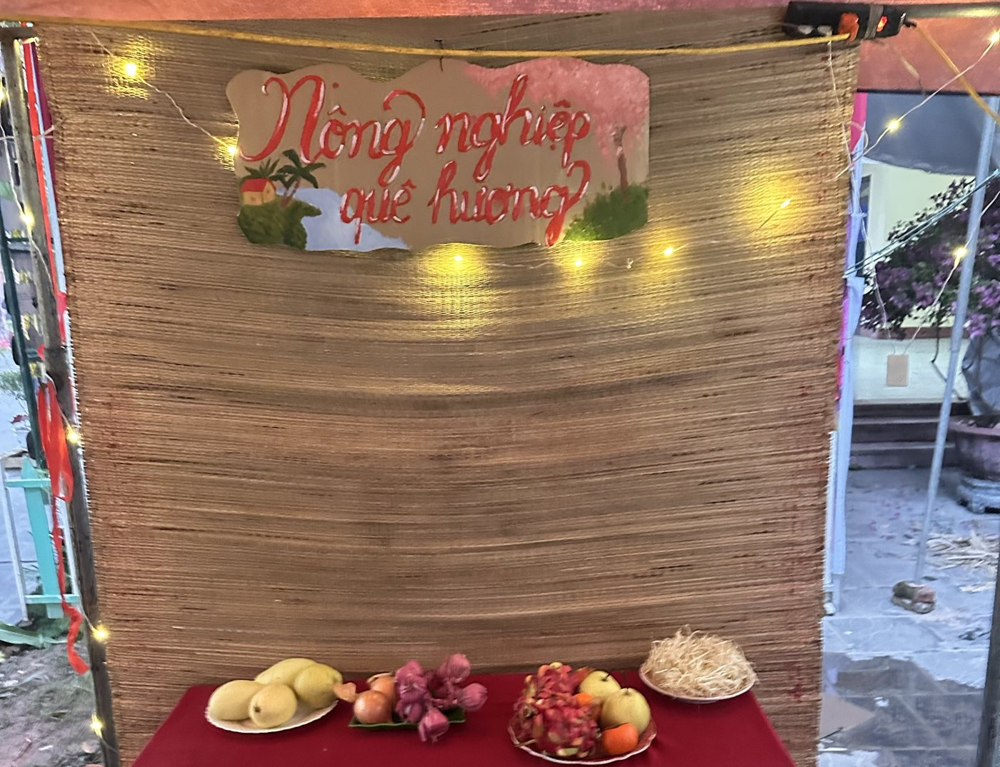
Phủ khăn đỏ, xếp hai tầng: trên là hoa trái, củ quả; dưới là hạt lạc, hạt gạo, hạt đỗ — những thứ làm nên bữa cơm hằng ngày của mỗi gia đình.
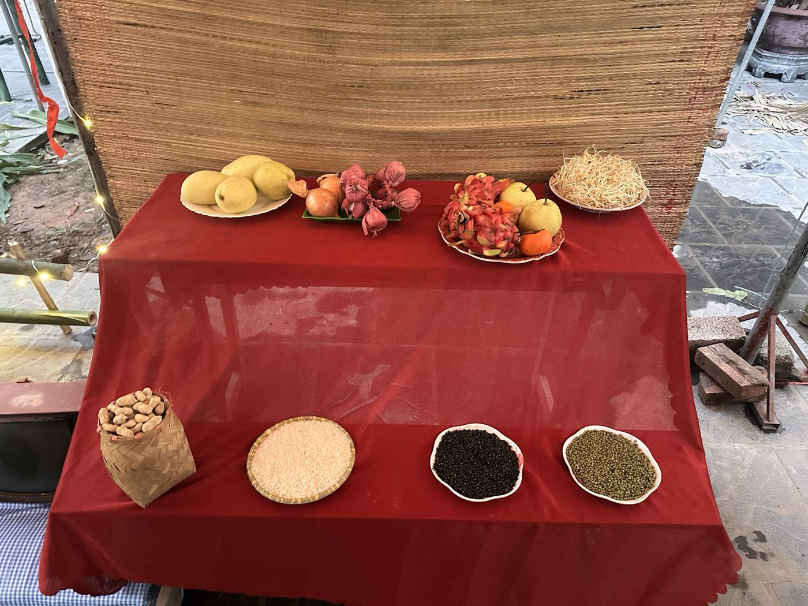
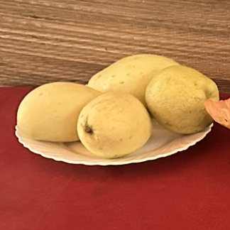
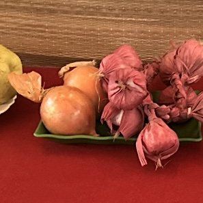
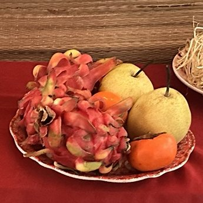
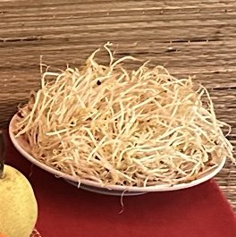
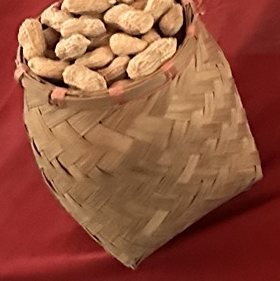
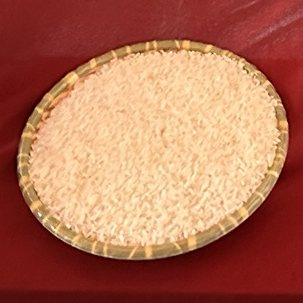
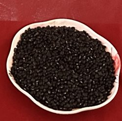
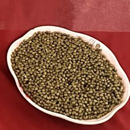
Một chiếc rổ tre đan đặt trên ghế gỗ, đầy ắp những thứ quen thuộc của vườn nhà. Bí ngô và cà tím được lớp tự cắt, may và nhồi bông từ vải nỉ; nằm cạnh là bắp cải và bắp ngô mô hình.


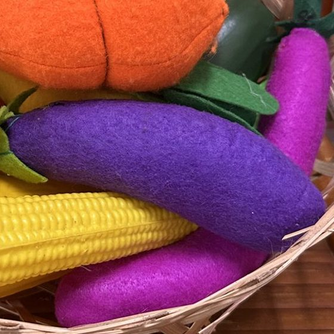
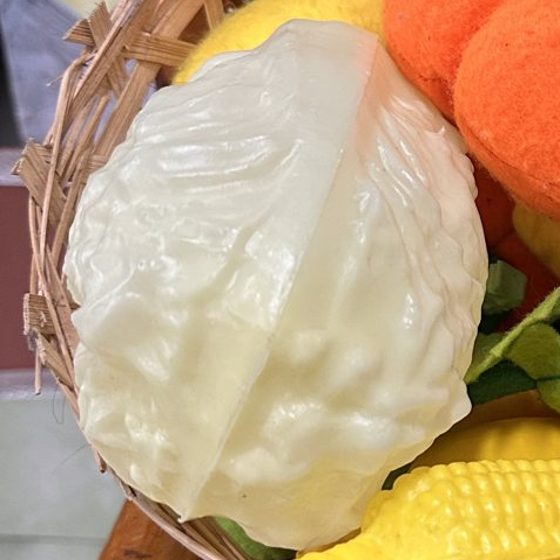
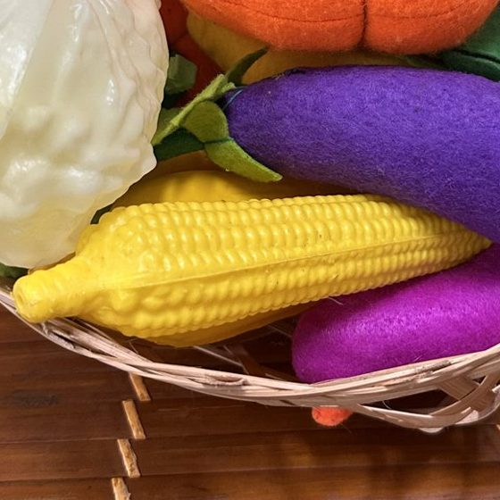
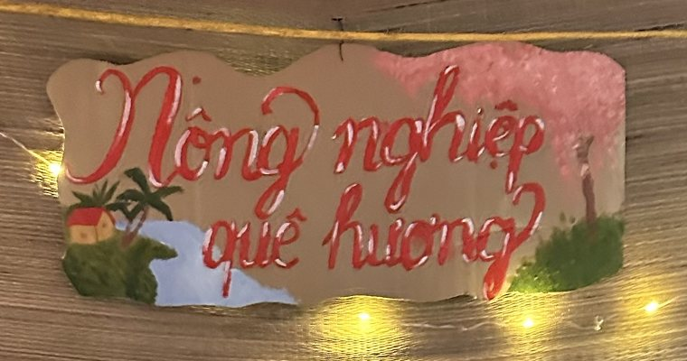
Phông nền của gian
Dòng chữ đỏ viết tay trên tấm bìa, xung quanh là ngôi nhà nhỏ, hàng dừa, dòng sông xanh và cành hoa hồng — cả một làng quê thu lại trong một tấm biển.
Tấm biển treo trên chiếu cói — thứ vật dụng gắn với giấc ngủ trưa, bữa cơm và những buổi phơi thóc của bao gia đình nông thôn.
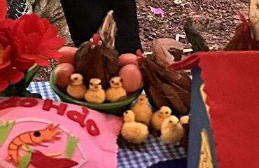
Sân vườn làng quê
Gà mẹ ấp ổ trứng hồng, quanh là những chú gà con lông vàng bông xốp — hình ảnh quen thuộc của mỗi sân nhà nơi thôn quê.
Điều chúng em muốn gửi gắm
Qua không gian này, chúng em muốn thể hiện tình yêu đối với mảnh đất mình sinh ra, đồng thời bày tỏ lòng biết ơn tới những người đã làm nên những mùa vàng no ấm.
Bởi đôi khi, chính những điều bình dị nhất lại làm nên linh hồn của quê hương.